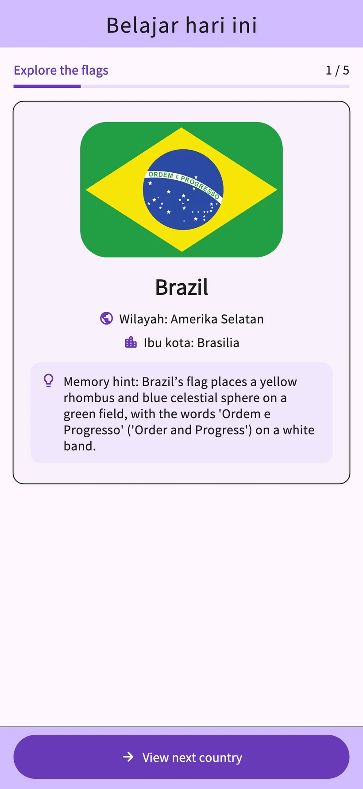
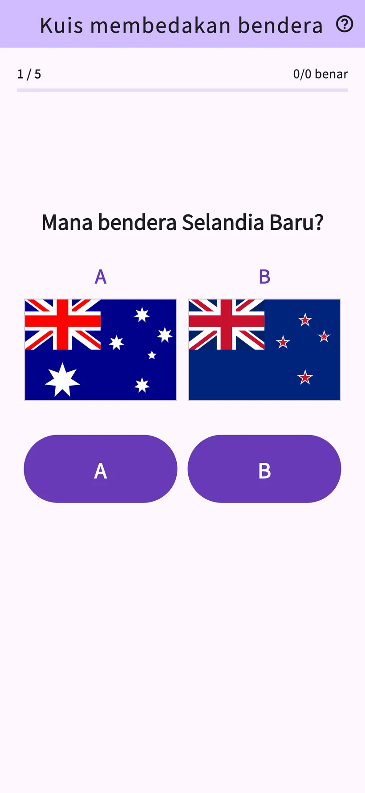
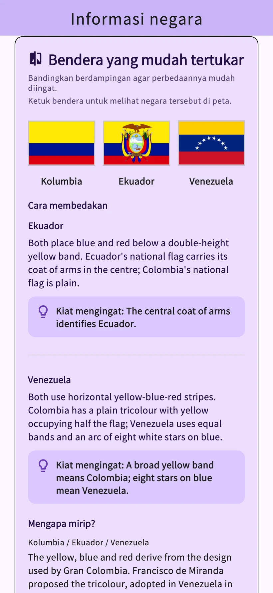
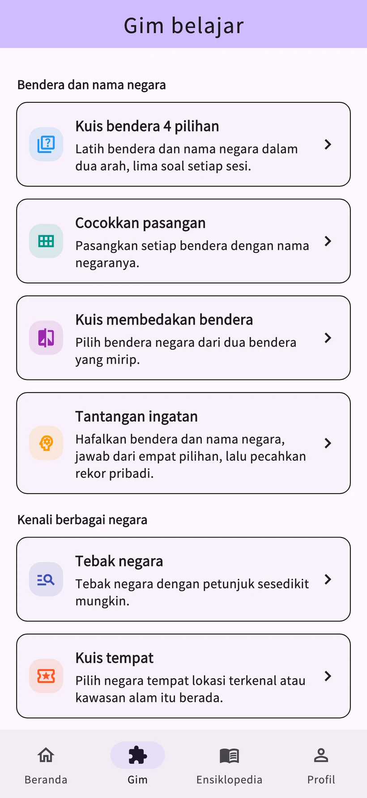

01
Kuis bendera 4 pilihan
Pilih nama negara untuk sebuah bendera atau bendera untuk suatu negara.
Kuis Bendera: Awa Pop
Pelajari bendera dan ibu kota 206 negara dan wilayah.
Uji ingatanmu melalui pelajaran harian dan delapan permainan.
iPhone & Android / Unduh gratis · Pembelian dalam aplikasi


Tampilan aplikasi sesungguhnya
Pelajari bendera dan nama negara, lalu uji dengan kuis. Ulasan disesuaikan dengan riwayat belajarmu.
Layar catatan memakai data contoh. Analisis belajar terperinci tersedia dengan STUDY PLUS.
Bandingkan warna dan pola untuk mempelajari perbedaannya. Coba contoh dengan bendera Prancis dan Italia.
Contoh di web untuk mencoba membedakan bendera. Tampilannya berbeda dari aplikasi.
Latih pengetahuan tentang bendera, nama negara, tempat terkenal, dan negara tetangga. Pilih permainan sesuai topik yang ingin dipelajari.
Pilih nama negara untuk sebuah bendera atau bendera untuk suatu negara.
Hubungkan setiap bendera dengan nama negaranya.
Pilih bendera yang benar dari dua desain yang mirip.
Ingat bendera dan nama negara, lalu jawab soal pilihan ganda.
Tebak negara dari petunjuk yang muncul bertahap.
Tentukan negara dari tempat terkenal dan warisan alam.
Bandingkan jumlah penduduk, luas wilayah, dan data lain dari dua negara.
Pilih negara yang berbagi perbatasan darat.


Bendera, ibu kota, peta, asal-usul, dan budaya 206 negara dan wilayah. Langsung cari tahu negara yang membuatmu penasaran saat kuis.
Bagikan budaya dan rekomendasi dari negara atau wilayah asalmu. Postingan pengguna diterjemahkan dan ditinjau pengelola sebelum terbit, lalu bisa dibaca dalam bahasa yang didukung.
Nama panggilan di Cerita negara bersifat opsional. Kamu bisa melaporkan atau menyembunyikan postingan. Video YouTube dibuka di luar aplikasi.
Belajar harian
Tonton iklan video berhadiah yang tersedia untuk menambah 3 penggunaan pada kategori pilihanmu hari itu. Membuka kembali negara yang sama pada hari itu tidak mengurangi jatah.
Tanpa batas penggunaan dan iklan
Paket bulanan dan tahunan yang diperpanjang otomatis
Pengguna yang memenuhi syarat dapat mencoba paket bulanan gratis selama 1 bulan. Paket tahunan tidak menyediakan uji coba gratis.
Lihat harga, syarat uji coba gratis, biaya setelah uji coba, dan periode perpanjangan di layar pembelian aplikasi.
Tersedia dalam 10 bahasa: Jepang, Inggris, Spanyol, Jerman, Korea, Thai, Indonesia, Prancis, Portugis Brasil, dan Mandarin Tradisional Taiwan.
Sesi hari ini dan pengulangan biasa gratis. Kamu bisa membuka rincian 3 negara berbeda dan bermain total 3 kali di tab Game per hari. Iklan video berhadiah yang tersedia menambah 3 penggunaan pada kategori pilihanmu hari itu.
Pengguna yang memenuhi syarat dapat mencoba paket bulanan gratis selama 1 bulan. Paket tahunan tidak menyediakan uji coba gratis. Lihat biaya dan syaratnya di layar pembelian aplikasi.
Tidak perlu mendaftar atau masuk. Kamu bisa mengirim Cerita Negara dan masukan dari aplikasi.
Catatan belajar disimpan di perangkat dan tidak disinkronkan otomatis ke perangkat lain. Memulihkan pembelian dan memindahkan catatan belajar adalah dua hal yang berbeda.
Siapa pun yang tertarik dengan bendera dan geografi bisa belajar sesuai ritmenya. Aplikasi memuat iklan, pembelian opsional, fitur postingan, dan tautan eksternal. Dampingi anak kecil saat menggunakannya.
Kirim setelah menyetujui aturan postingan, penerjemahan, dan publikasi. Postingan akan diterjemahkan dan ditinjau pengelola sebelum terbit. Nama panggilan opsional. Kamu bisa menghapus, melaporkan, atau menyembunyikan postingan.
Coba pelajaran harian dan delapan permainan di aplikasi.
iPhone & Android / Unduh gratis · Pembelian dalam aplikasi